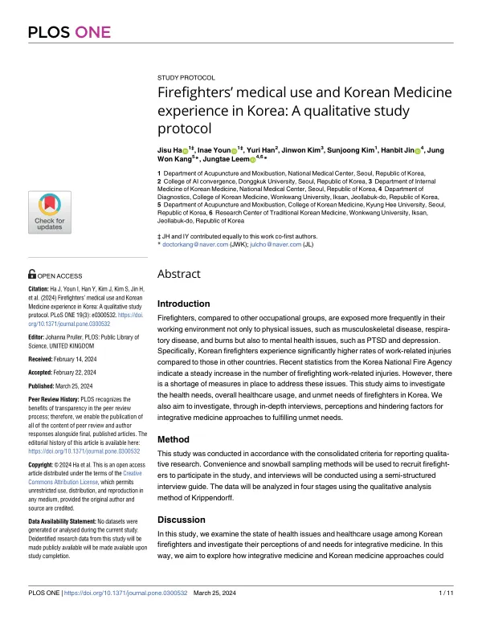

Firefighters’ medical use and Korean Medicine experience in Korea: A qualitative study protocol
Ha J, Youn I, Han Y, Kim J, Kim S, Jin H, Kang JW, Leem J
PLOS ONE 19(3):e0300532

첫 장 · 오픈액세스First page · open access
논문 소개Summary
소방관은 일하는 자리 자체가 위험합니다. 연기와 유해물질에 노출되어 폐렴과 천식, 만성폐쇄성폐질환이 흔하고, 화상과 화학물질로 피부를 다치며, 장비를 지고 구조하는 동작이 척추와 관절을 상하게 합니다. 사고 현장의 부담은 우울과 불안, 외상후스트레스장애로 이어집니다. 한국 소방관의 업무 관련 부상률은 다른 나라보다 눈에 띄게 높고 소방청 통계에서 최근 10년 동안 꾸준히 늘었습니다.
제도가 없지는 않습니다. 미국은 소방협회 표준이 건강 프로그램을 제시하지만 실제로는 소방서의 70% 이상이 운영하지 않습니다. 한국도 소방청이 업무 스트레스와 외상후스트레스장애 관리 프로그램을 두고 있고 한 조사에서 시설의 88.3%가 체력단련장이나 특강 형태의 건강관리 프로그램을 갖고 있었지만 만족도는 높지 않았습니다. 통증과 재활, 화상, 심리 문제에서 채워지지 않은 요구가 남아 있습니다.
이 논문은 그 요구가 무엇인지 소방관에게 직접 듣기 위한 질적연구의 프로토콜입니다. 편의 표집과 눈덩이 표집으로 19세부터 65세까지의 한국 소방관을 모으고 은퇴자도 포함합니다. 성별과 나이, 직군, 지역, 근속연수를 고려해 20명을 목표로 하되 자료가 포화되지 않으면 더 면담합니다. 반구조화 면담을 일대일 또는 초점집단으로 진행하고 한 회 60~150분, 한 사람이 최대 다섯 회까지 참여할 수 있습니다. 묻는 것은 평소의 건강 상태와 병원을 찾은 이유, 소방청 교육과 프로그램의 경험, 한의 치료의 경험과 인식입니다. 분석은 내용분석의 네 단계로 자료 전체를 이해하고, 의미 있는 진술을 찾고, 범주를 만들고, 사회적·개인적·인지적 차원으로 다시 묶습니다.
프로토콜이므로 면담 결과는 이 논문에 없습니다. 대신 신뢰성을 지키는 장치를 밝혀 두었습니다. 면담자는 한의사이지만 코딩은 여러 연구자가 함께 검토하고, 면담에 참여하지 않은 연구자 두 사람이 따로 평가하며 그중 한 사람은 한의사가 아닌 질적연구 전문가입니다.
저자들은 두 가지를 스스로 짚습니다. 전국에서 고르게 모집하려 했으나 그러지 못해 소방관 전체로 일반화하기 어렵다는 점, 그리고 연구진에 한의사가 들어 있어 한의학에 우호적인 방향으로 결과가 기울 수 있다는 점입니다. 다만 같은 이유로 한의 치료의 내용을 알고 깊이 물을 수 있다고도 적었습니다. 이 연구의 쓰임은 앞으로 세워질 소방병원의 방향을 잡고, 경찰병원처럼 특정 직업군을 맡는 공공의료기관에 참고가 되는 데 있습니다.
For firefighters the workplace itself is the hazard. Exposure to smoke and harmful substances makes pneumonia, asthma and chronic obstructive pulmonary disease common; burns and chemicals injure the skin; carrying equipment and performing rescues damages the spine and joints. The burden of the incident scene leads on to depression, anxiety and post-traumatic stress disorder. Work-related injury rates among Korean firefighters are markedly higher than in other countries and have risen steadily over the past decade in National Fire Agency statistics.
It is not that no provision exists. In the United States, National Fire Protection Association standards set out wellness programmes, yet over 70% of fire stations do not run them. In Korea the National Fire Agency operates programmes for work stress and PTSD, and one survey found 88.3% of facilities offering health management in the form of training facilities or special lectures — but satisfaction was low. Unmet needs remain in pain, rehabilitation, burns and psychological problems.
This paper is the protocol for a qualitative study that asks firefighters directly what those needs are. Convenience and snowball sampling will recruit Korean firefighters aged 19 to 65, retirees included. Twenty participants are targeted, with sex, age, job family, region and years of service taken into account, and further interviews if the data are not yet saturated. Semi-structured interviews will be conducted one-to-one or in focus groups, lasting 60 to 150 minutes per session, with up to five sessions per person. The questions cover everyday health, reasons for seeking care, experience of National Fire Agency education and programmes, and experience and perception of Korean medicine. Analysis follows four stages of content analysis: understanding the data as a whole, identifying significant statements, forming categories, and reorganising them into social, personal and cognitive dimensions.
Being a protocol, the paper contains no interview findings. What it does set out are the safeguards for trustworthiness. The interviewers are Korean medicine doctors, but coding is reviewed jointly by several researchers, and two researchers who did not conduct the interviews evaluate the results independently — one of them a qualitative research expert who is not a Korean medicine doctor.
The authors name two problems themselves. They intended nationwide recruitment but could not achieve it evenly, so the sample is hard to generalise to firefighters as a whole; and the presence of Korean medicine practitioners on the research team could tilt the findings favourably towards Korean medicine. For the same reason, they add, the team can ask about treatment with real understanding. The study is meant to inform the direction of the National Fire Hospital now being planned, and to serve as reference for public institutions that care for particular occupational groups, such as the National Police Hospital.
인용Cite
Ha J, Youn I, Han Y, Kim J, Kim S, Jin H, Kang JW, Leem J. Firefighters’ medical use and Korean Medicine experience in Korea: A qualitative study protocol. PLOS ONE. 2024;19(3):e0300532. doi:10.1371/journal.pone.0300532